What is this?
The Azure Hub & Spoke Routing Simulator is a free, in-browser tool that shows how packets travel through a typical Azure hub-and-spoke network that is connected to an on-premises datacenter over ExpressRoute. You define the IP ranges, peerings, route tables (UDRs), BGP advertisements and inspection appliances. The simulator then calculates the effective routes of every subnet and traces a packet hop by hop, forward and back.
It is built to answer questions such as:
- Does traffic between two spokes really pass through the firewall, or does it bypass it?
- Why is my traffic hairpinning over the ExpressRoute circuit?
- Is the return path the same as the request path (symmetric), so a stateful firewall sees the whole session?
- What do Propagate gateway routes, Disable peering route propagation and the new routing appliance (VNRA) change?
Everything runs locally in your browser. There is no backend and nothing is uploaded. It is a teaching and design aid: it models the routing decision, not every Azure feature (see Limitations).
Quick start
- Open the simulator and pick a scenario in the dropdown at the top. Start with Private (incl. on-prem) and Public over Azure Firewall.
- Choose From (a spoke or on-prem), enter a source IP and a destination IP, or press one of the
→quick buttons. - Watch the blue line (request) and the green dashed line (reply) in the topology. The badge at the top right gives the verdict.
- Open Traffic trace at the bottom to read every routing decision in plain language.
- Click a component (or press ⚙ Config) to change its settings and see the result live.
- Switch to one of the ✖ Common mistakes to see what typical misconfigurations look like.
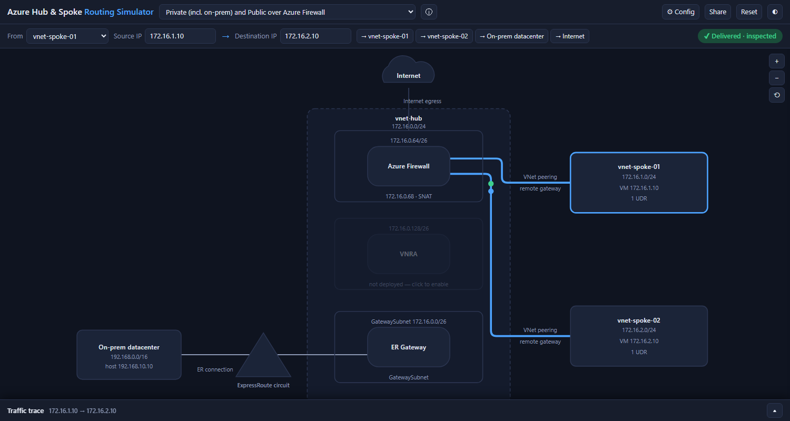
The screen
| Area | Purpose |
|---|---|
| Header | Title, scenario dropdown with the ⓘ info button, a possible warnings chip, the blue Docs button, ⚙ Config, Share, Reset and the theme toggle. |
| Flow bar | Defines which packet is simulated (source, source IP, destination IP) and shows the verdict. |
| Topology | The full-width diagram: Internet, hub VNet with firewall, VNRA and ER gateway, two spokes, the ExpressRoute circuit and on-prem. |
| Traffic trace | A flyout along the bottom with the hop-by-hop explanation. Collapsed by default. |
| Configuration panel | A flyout on the right with settings and effective routes of the selected component. Collapsed by default. |
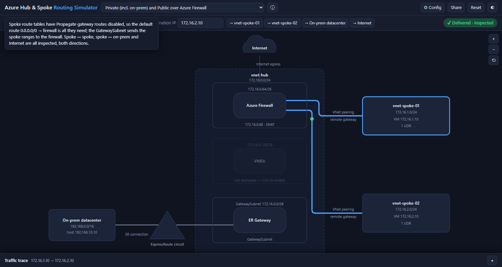
Topology and flows
Components
- On-prem datacenter with connected networks (default
192.168.0.0/16) and a host (192.168.10.10). - ExpressRoute circuit (MSEE), the Microsoft edge routers that exchange routes between on-prem and Azure.
- vnet-hub (
172.16.0.0/24) with the ER Gateway (GatewaySubnet), the Azure Firewall and the optional VNRA (Virtual Network Routing Appliance). Every one has its own subnet and, for appliances, its own route table. - vnet-spoke-01 (
172.16.1.0/24) and vnet-spoke-02 (172.16.2.0/24), each peered with the hub and each with a VM. - Internet, reached through the firewall (SNAT), a NAT gateway / public IP on a spoke (explicit outbound), or not at all.
Reading the lines
- A solid blue line is the request, a dashed green line is the reply.
- When the reply retraces exactly the same path, it is drawn as one bidirectional line with two dots. When the paths differ (asymmetric) you see two separate lines.
- Hub components behave like a box with an in side and an out side: a flow enters on the left lanes, and leaves on the right lanes, so lines never cross. Flows are drawn behind the components so they appear to enter and leave each box.
- Traffic to and from on-prem always uses the bottom lane of the ER gateway.
- A dotted grey line is an idle link. A red ✖ marks the spot where a packet is dropped.
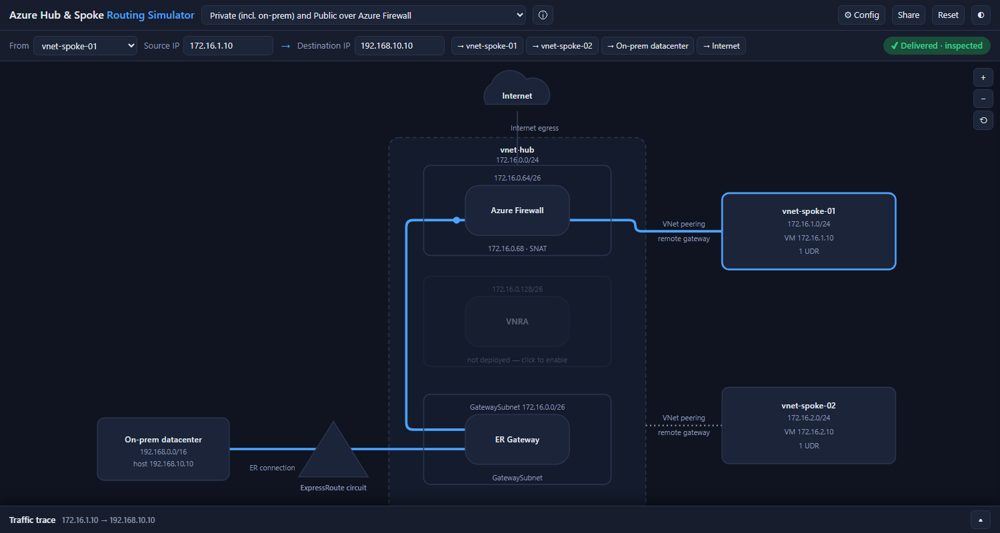
Flow bar
- From: the origin of the packet. Spoke 1, spoke 2 or on-prem.
- Source IP / Destination IP: any IPv4 address. A red outline means the address is not valid. The destination drives which component is the target: a spoke VM, an on-prem host or any other address, which is treated as the Internet.
- → quick buttons: set the destination to spoke 1, spoke 2, on-prem or the Internet in one click.
- Verdict badge:
✔ Delivered · inspected Request and reply were both delivered and the traffic passed an inspecting appliance. ✔ Delivered Delivered both ways, without inspection (not necessarily a problem, for example on-prem to a spoke without a firewall requirement). ⚠ Delivered, with warnings Works, but something is suspicious (hairpin, bypass, asymmetry through a pure forwarder). ✖ Delivered one way only An asymmetric path through a stateful firewall: in practice the session fails. ✖ Dropped No route, peering setting blocks it, policy deny or no Internet egress.
Traffic trace
Press the Traffic trace bar at the bottom to slide the panel up. It has three columns:
- Request: every hop with the route that was chosen (source, prefix, next hop) and a sentence that explains the decision.
- Reply: the same for the way back. If it follows the request path in reverse, it says so.
- Findings: warnings and errors such as hairpin, asymmetry, bypassed UDRs, or No problems found.
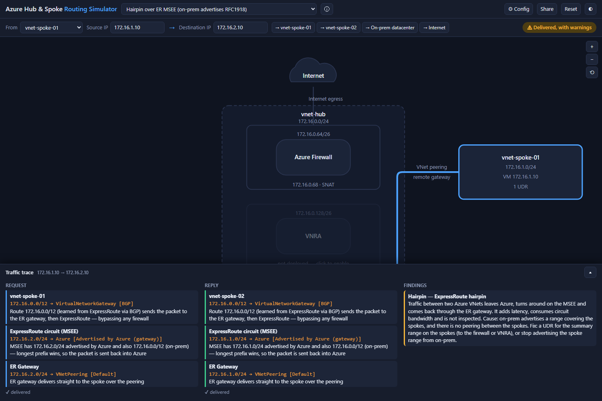
172.16.0.0/12 sends spoke traffic to the MSEE, which sends it straight back.Configuration panel
Click any component, or press ⚙ Config, to open the right-hand panel. Changes apply immediately. Once you edit anything, the scenario name changes to Custom (edited). A ✕ closes the panel. At the bottom of each panel you find the Effective routes of that component: the rows used by the current flow are highlighted and overridden routes are struck through.
On-prem datacenter
- Name, Host IP.
- Connected networks: the real networks behind the router, comma separated CIDRs.
- Advertised prefixes: what on-prem advertises to Azure over BGP. Anything advertised that is not a connected network is treated as an aggregate that points to Null0 on-prem. Shortcut buttons: RFC1918, Only connected networks, + 0.0.0.0/0.
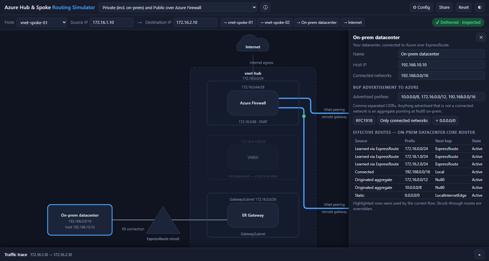
Hub, ER gateway, firewall, VNRA, circuit
- vnet-hub: name and address space.
- ER Gateway: subnet CIDR and the GatewaySubnet route table. Propagate gateway routes is locked on (see Rules Azure enforces).
- Azure Firewall and VNRA:
- Deployed: the VNRA is off by default. Click the dashed box in the topology to enable it.
- Subnet CIDR and Private IP: must be inside the hub address space and not overlap other subnets.
- SNAT to the Internet: whether the appliance translates to its public IP when it sends traffic out.
- Policy allows the flow: turn it off to see a policy deny at the appliance.
- Route table with Propagate gateway routes, Disable peering route propagation and UDRs.
- ExpressRoute circuit (MSEE): explanation only. It holds the routes of both sides and sends each packet to the side with the longest matching prefix. Azure wins a tie.
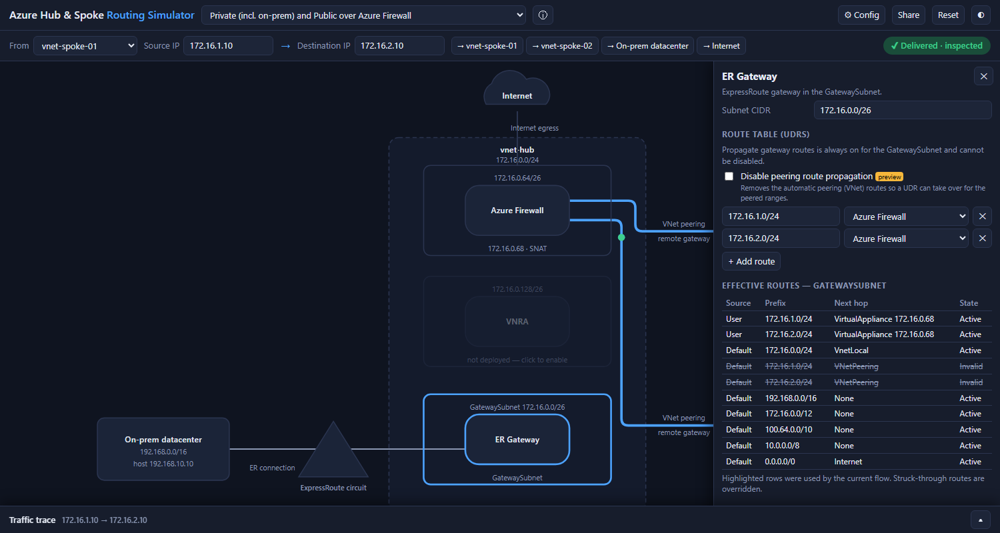
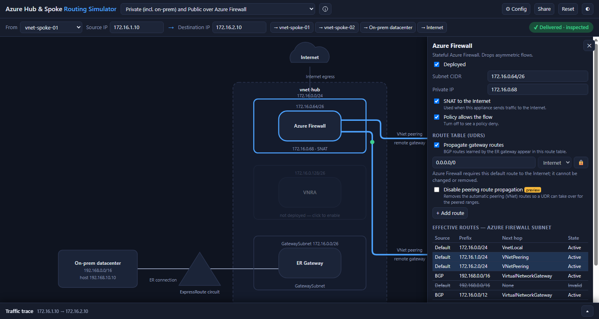
0.0.0.0/0 → Internet route, the DPR switch and its effective routes.Spokes and peering
- Name, Address space, VM IP.
- Explicit outbound (NAT Gateway / public IP): default outbound access to the Internet has been retired in Azure. Without an explicit outbound method, the system route
0.0.0.0/0 → Internetexists but traffic is dropped. - Peering spoke → hub: Allow access to remote network, Allow forwarded traffic, Use remote gateway (learn on-prem routes through the hub's ER gateway).
- Peering hub → spoke: Allow access to remote network, Allow forwarded traffic (needed so the hub can forward traffic into the spoke), Allow gateway transit.
- The spoke route table: Propagate gateway routes and UDRs.
Route tables (UDRs)
- Propagate gateway routes: BGP routes learned by the ER gateway appear in the subnet's route table. Turn it off on a spoke so that a single default route can take full control.
- Disable peering route propagation preview: removes the automatic peering routes from the subnet so UDRs can steer the peered ranges.
- + Add route: prefix (autocomplete suggests
0.0.0.0/0, RFC1918 ranges and your hub+spokes summary) and next hop: Azure Firewall, Routing appliance (VNRA), Virtual network gateway, Internet, None (drop), Virtual network. - A red outline means an invalid prefix. Remove a route with ✕.
Toolbar, zoom and mobile
| Control | Function |
|---|---|
| Docs (blue) | Opens this documentation. |
| ⚙ Config | Opens or closes the configuration flyout. |
| Share | Copies a link that contains the whole scenario (ranges, routes, flow). |
| Reset | Returns to the first scenario and clears your changes. |
| ◐ | Dark / light theme (remembered). |
| + − ⟲ | Zoom in, out and reset. Also: scroll wheel to zoom, drag to pan. |
| ⓘ | Description of the selected scenario. |
| ⚠ n issues | Appears when the configuration is inconsistent (overlapping address spaces, an invalid CIDR, a subnet outside the hub range...). Click it for the list. |
On a phone the header and flow bar wrap, the topology takes the whole screen, and the panels become full-width flyouts. Pan with one finger and zoom with a pinch.
How routes are chosen
For every subnet the simulator builds the same effective route table Azure would show, then applies the Azure rules in order:
- Longest prefix match wins.
- For the same prefix: User (UDR) beats BGP, which beats Default (system).
- A user route for
0.0.0.0/0invalidates the default system route to the Internet, and the system None routes for private ranges. - The route sources are: Default (local VNet, peering, Internet, None for RFC1918), BGP (on-prem routes learned over ExpressRoute and, in the opposite direction, Azure routes advertised to on-prem) and User.
- Peering needs the right permissions: access, forwarded traffic and gateway transit / remote gateway decide whether a packet can enter, transit or leave a VNet.
The MSEE is modelled as a router that has both the Azure prefixes and the on-prem prefixes, and sends a packet to the side with the longest matching prefix. If on-prem advertises 172.16.0.0/12 and Azure advertises 172.16.2.0/24, the Azure /24 wins for traffic that arrives from Azure. But if the spoke has a route for 172.16.0.0/12 through the gateway and no spoke-specific route, the packet leaves to on-prem and comes straight back: a hairpin.
Rules Azure enforces
0.0.0.0/0 → Internet that cannot be changed. The simulator shows it as a locked row and strips any other 0.0.0.0/0 you try to add.Disable peering route propagation and VNRA
Disable peering route propagation (preview)
Normally a VNet peering adds system routes for the peered address space. These always exist and, being more specific than a summary UDR, can bypass your appliance. With the preview setting Disable peering route propagation on a route table, those peering routes are removed for that subnet so a UDR (for example 0.0.0.0/0 → firewall) takes over. In the simulator the finding UDR bypassed by a more specific route tells you when you need it.
Virtual Network Routing Appliance (VNRA)
The VNRA (preview) is a pure routing/forwarding appliance in the hub. It does not SNAT and does not track sessions, so it tolerates asymmetry, but it provides no inspection either. Enable it in the topology (the dashed box) or its configuration panel. Use it for private traffic and chain it to the firewall for Internet traffic (scenarios 3 and 4).
Findings and verdicts
| Finding | Meaning | Typical fix |
|---|---|---|
| Asymmetric (error) | Only one direction passes a stateful firewall. It sees half a session and drops it. | Make both directions use the same inspection point: a UDR on the spoke and on the GatewaySubnet (or disable propagation and use a default route). |
| Asymmetric (warning) | Request and reply use different paths, but the appliance is a pure forwarder (VNRA). | Usually acceptable; make the paths equal if you want to inspect later. |
| Hairpin | Spoke to spoke traffic leaves Azure, turns around on the MSEE and comes back through the ER gateway. | Add UDRs for the summary range to the firewall, or stop advertising the spoke range from on-prem. |
| PeerBypass | A system peering route is more specific than your UDR. | Use specific UDRs, or Disable peering route propagation. |
| Bypass | Internet egress does not pass the Azure Firewall. | Add 0.0.0.0/0 → firewall to the spoke. |
| NoEgress | No explicit outbound method. | Add a NAT Gateway / public IP or a default route to an appliance. |
| Dropped | No route, blocked peering permission, policy deny or None next hop. | Read the trace: it names the hop and the reason. |
Preset overview
The dropdown is grouped in ✔ Correct configurations (patterns you can use) and ✖ Common mistakes (wrong configurations that illustrate typical problems). Each preset is a full scenario that you can inspect and edit. All presets share the same base addresses:
| Item | Value |
|---|---|
| vnet-hub | 172.16.0.0/24: GatewaySubnet 172.16.0.0/26, Azure Firewall 172.16.0.64/26 (IP .68), VNRA 172.16.0.128/26 (IP .132, disabled by default) |
| vnet-spoke-01 / 02 | 172.16.1.0/24, VM 172.16.1.10 / 172.16.2.0/24, VM 172.16.2.10 |
| On-prem | Connected 192.168.0.0/16, advertises RFC1918 (10.0.0.0/8, 172.16.0.0/12, 192.168.0.0/16), host 192.168.10.10 |
| Internet | 20.50.60.70 |
| # | Scenario | Result |
|---|---|---|
| 1 | Private (incl. on-prem) and Public over Azure Firewall | ✔ correct |
| 2 | Public over Azure Firewall, private via gateway (no spoke-to-spoke) | ✔ correct |
| 3 | Public over Azure Firewall, private (incl. on-prem) over VNRA | ✔ correct |
| 4 | Private (incl. on-prem) and Public over VNRA, VNRA default route to firewall | ✔ correct |
| 5 | Asymmetric traffic over Azure Firewall (spoke ↔ spoke) | ✖ wrong |
| 6 | Hairpin over ER MSEE (on-prem advertises RFC1918) | ✖ wrong |
| 7 | Asymmetric traffic to on-prem (one leg over Azure Firewall) | ✖ wrong |
1 · ✔ Private (incl. on-prem) and Public over Azure Firewall (default)
Goal: inspect everything with the Azure Firewall: spoke ↔ spoke, spoke ↔ on-prem and Internet.
Configuration
- Spokes: Propagate gateway routes disabled and a single UDR
0.0.0.0/0 → Azure Firewall. Without propagation the BGP routes (on-prem and the RFC1918 summary) do not enter the spoke, so the default route is all that is needed. Nothing more specific than0.0.0.0/0competes except the VNet and peering routes. - GatewaySubnet: UDRs for each spoke range (
172.16.1.0/24,172.16.2.0/24) → Azure Firewall, so returning on-prem traffic enters the firewall too. The gateway's own propagation cannot be disabled. - Firewall: default Azure Firewall subnet route table with the locked
0.0.0.0/0 → Internet. BGP routes are propagated so it knows the way to on-prem through the gateway.
Traffic
| Flow | Request | Reply |
|---|---|---|
| Spoke 1 → spoke 2 | spoke 1 → firewall → spoke 2 | spoke 2 → firewall → spoke 1 |
| Spoke 1 → on-prem | spoke 1 → firewall → ER gateway → MSEE → on-prem | on-prem → MSEE → ER gateway → firewall → spoke 1 |
| Spoke 2 → Internet | spoke 2 → firewall (SNAT) → Internet | Internet → firewall → spoke 2 |
Verdict: ✔ Delivered · inspected, no findings. All paths are symmetric.
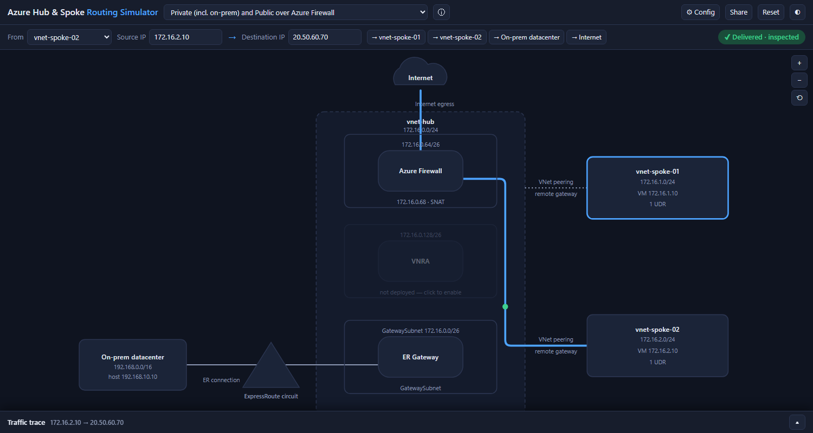
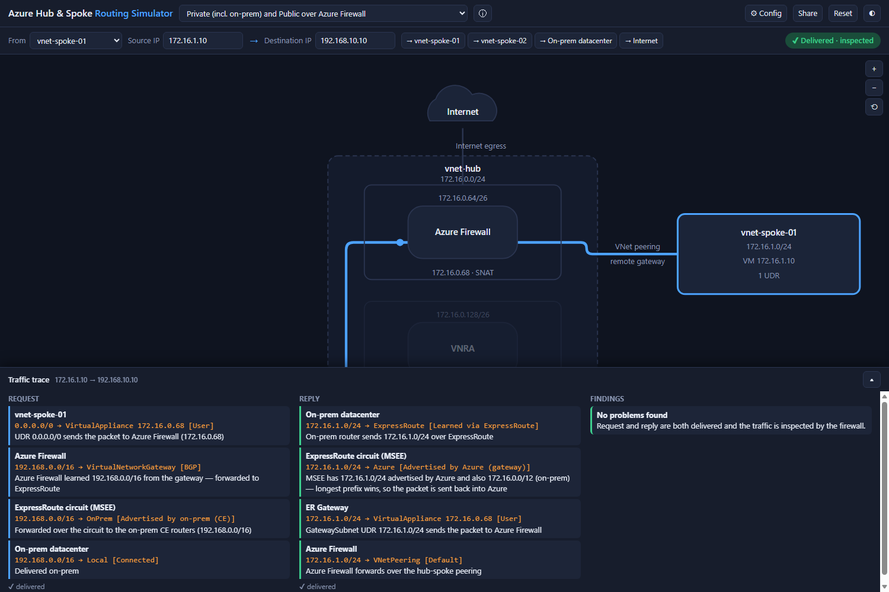
Things to try: enable Propagate gateway routes on a spoke and watch the more specific BGP routes (e.g. 192.168.0.0/16) override part of the picture; remove a GatewaySubnet UDR and see the asymmetry appear.
2 · ✔ Public over Azure Firewall, private via gateway (no spoke-to-spoke)
Goal: only Internet traffic is inspected. On-prem traffic goes directly over the ER gateway, with no firewall in the path.
Configuration
- On-prem connects and advertises only
192.168.10.0/24: a small, non-overlapping range, not RFC1918. This avoids a hairpin because Azure does not learn any summary that covers the spokes. - Spokes: default
0.0.0.0/0 → Azure Firewall, Propagate gateway routes on, so the BGP /24 (more specific) sends on-prem traffic straight to the gateway. - No UDRs on the GatewaySubnet.
Traffic
| Flow | Request | Reply |
|---|---|---|
| Spoke 1 → on-prem | spoke 1 → ER gateway → MSEE → on-prem | on-prem → MSEE → ER gateway → spoke 1 |
| Spoke 2 → Internet | spoke 2 → firewall → Internet | Internet → firewall → spoke 2 |
| Spoke 1 → spoke 2 | spoke 1 → firewall → spoke 2 (via the default route) | spoke 2 → firewall → spoke 1 |
Verdict: ✔ Delivered for each flow, symmetric. Spoke ↔ spoke traffic is not blocked: the only path between the spokes is the default route through the firewall, which acts as an inspected path unless the firewall policy denies it. There is no direct spoke-to-spoke route (peering between the spokes does not exist).
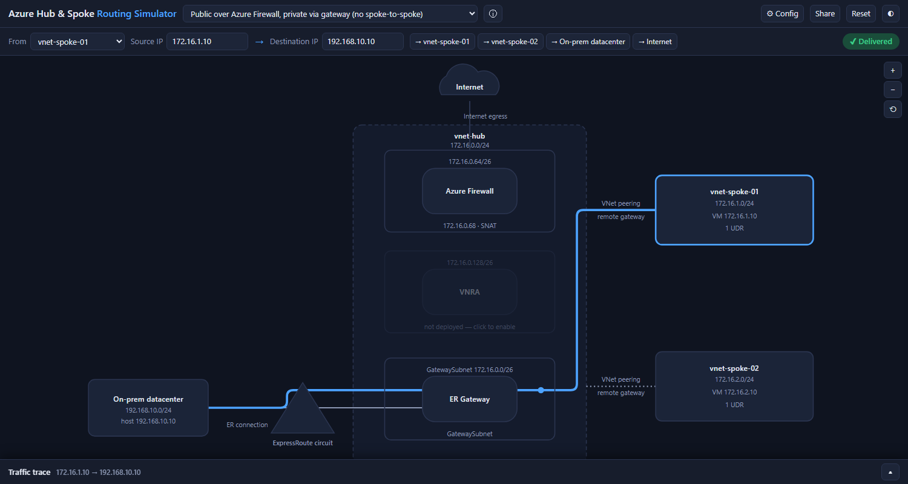
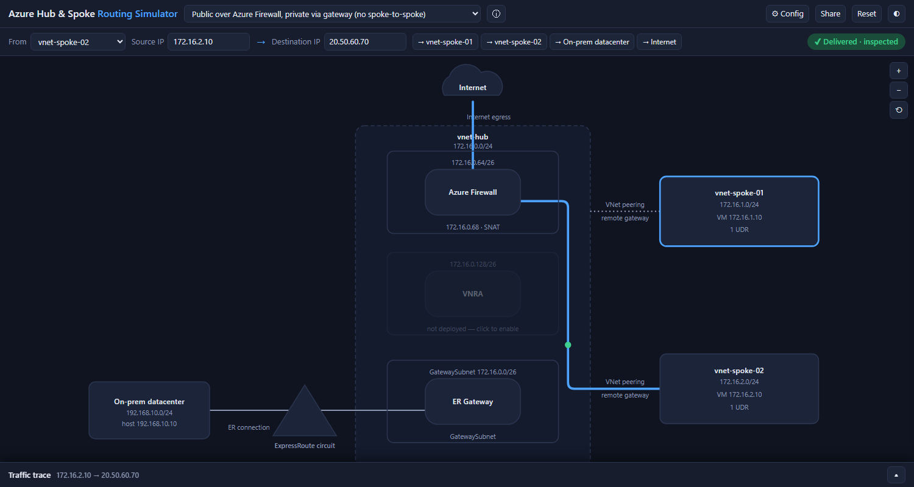
Things to try: change the on-prem advertisement to RFC1918 and watch the hairpin appear; this is exactly what scenario 6 shows.
3 · ✔ Public over Azure Firewall, private (incl. on-prem) over VNRA
Goal: use the VNRA as a high-throughput router for all private traffic and keep the firewall for Internet traffic.
Configuration
- VNRA deployed (
172.16.0.128/26, IP172.16.0.132). - Spokes: UDRs for
10.0.0.0/8,172.16.0.0/12and192.168.0.0/16→ VNRA, and0.0.0.0/0→ Azure Firewall. The RFC1918 UDRs win over the default route and over the BGP routes of the same prefix. - GatewaySubnet: UDRs for each spoke range → VNRA, so returning on-prem traffic goes through the same appliance.
Traffic
| Flow | Request | Reply |
|---|---|---|
| Spoke 1 → spoke 2 | spoke 1 → VNRA → spoke 2 | spoke 2 → VNRA → spoke 1 |
| Spoke 1 → on-prem | spoke 1 → VNRA → ER gateway → MSEE → on-prem | on-prem → MSEE → ER gateway → VNRA → spoke 1 |
| Spoke 2 → Internet | spoke 2 → firewall → Internet | Internet → firewall → spoke 2 |
Verdict: ✔ Delivered. The VNRA does not SNAT, so both directions stay symmetric. Private traffic is routed but not inspected; Internet traffic is inspected.
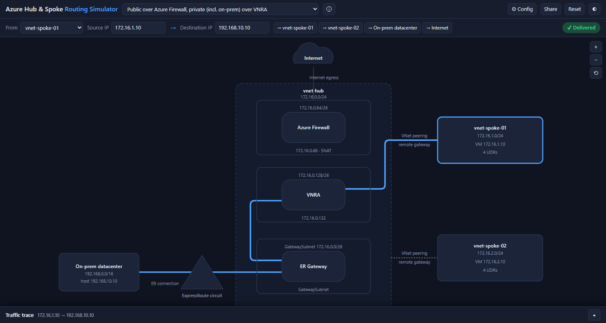
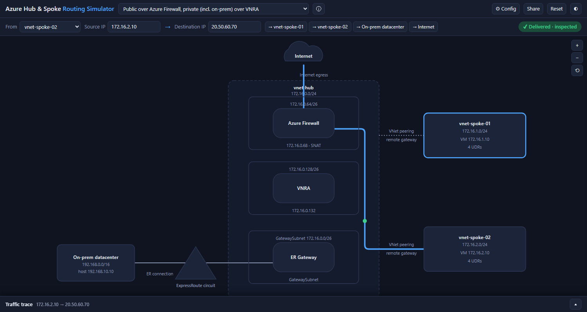
4 · ✔ Private (incl. on-prem) and Public over VNRA, VNRA default route to firewall
Goal: spokes only know one next hop (the VNRA). The VNRA decides: private traffic is routed, Internet traffic is chained on to the firewall.
Configuration
- VNRA deployed.
- Spokes: Propagate gateway routes disabled, one UDR
0.0.0.0/0 → VNRA. - VNRA subnet: UDR
0.0.0.0/0 → Azure Firewall. - GatewaySubnet: spoke ranges → VNRA.
Traffic
| Flow | Request | Reply |
|---|---|---|
| Spoke 1 → spoke 2 | spoke 1 → VNRA → spoke 2 | spoke 2 → VNRA → spoke 1 |
| Spoke 1 → on-prem | spoke 1 → VNRA → ER gateway → MSEE → on-prem | on-prem → MSEE → ER gateway → VNRA → spoke 1 |
| Spoke 2 → Internet | spoke 2 → VNRA → firewall → Internet | Internet → firewall → VNRA → spoke 2 |
Verdict: ✔ Delivered, symmetric. Internet traffic is inspected. Spoke 1 → spoke 2 also goes through the VNRA.
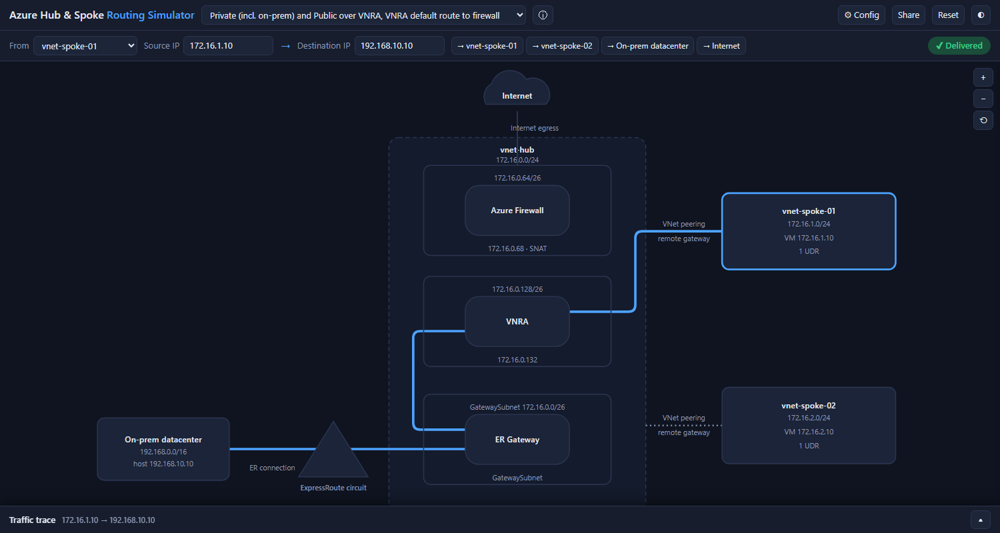
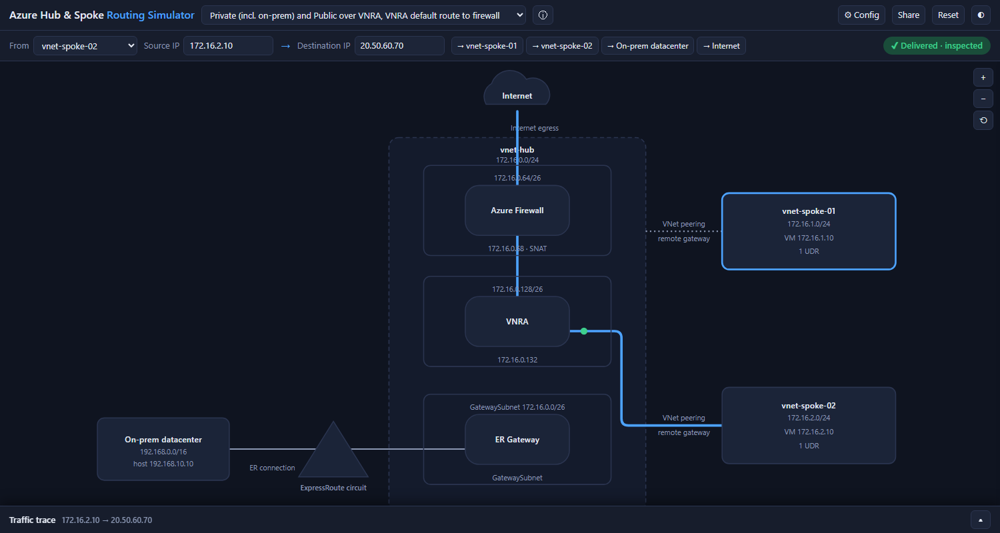
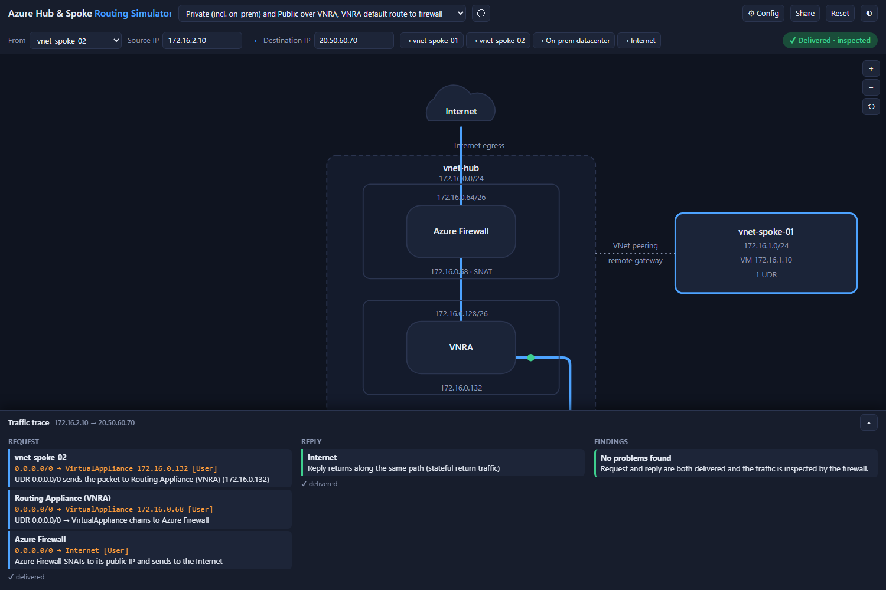
5 · ✖ Asymmetric traffic over Azure Firewall (spoke ↔ spoke)
What goes wrong: only spoke 1 has a UDR that sends the spoke range to the firewall. Spoke 2 has no such route.
- Request: spoke 1 → firewall → spoke 2 (via the UDR on spoke 1).
- Reply: spoke 2 does not send the reply to the firewall. It follows the BGP summary learned over ExpressRoute: spoke 2 → ER gateway → MSEE → ER gateway → spoke 1, so it never reaches the firewall.
Result: ✖ Delivered one way only with the findings Asymmetric (the firewall sees half a session and drops it) and Hairpin (the reply even leaves Azure).
Fix: give both spokes the same UDR (or disable propagation on both spokes and use one default route to the firewall), so request and reply use the same appliance.
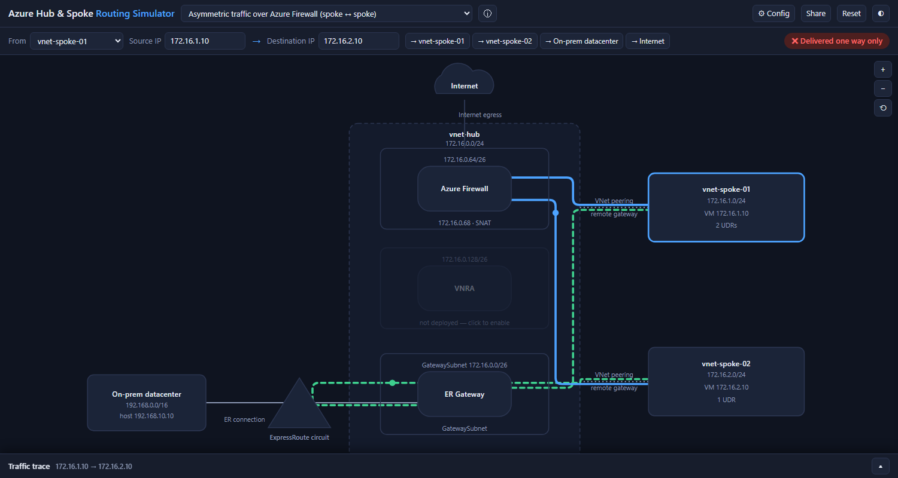
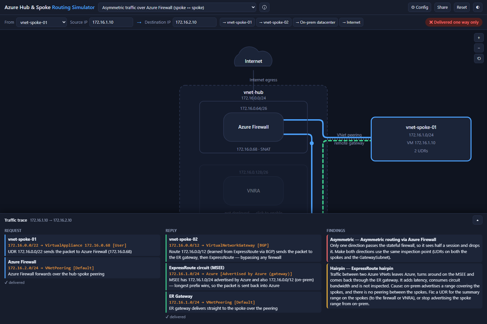
6 · ✖ Hairpin over ER MSEE (on-prem advertises RFC1918)
What goes wrong: the spokes only have 0.0.0.0/0 → Azure Firewall and on-prem advertises the entire RFC1918 range. The BGP routes 10.0.0.0/8, 172.16.0.0/12 and 192.168.0.0/16 are more specific than the default route, so 172.16.0.0/12 covers the other spoke.
- Spoke 1 → spoke 2 matches
172.16.0.0/12 → Virtual network gateway(BGP) and not the default route to the firewall. The packet goes to the ER gateway, to the MSEE, which has the better route (the Azure /24) and sends it back to the gateway and into the spoke 2. - The firewall is never involved.
Result: ⚠ Delivered, with warnings: Hairpin. It works, but adds latency, consumes circuit bandwidth, and is not inspected.
Fix: stop advertising a range covering your Azure address space (advertise only your real on-prem networks, as in scenario 2) or add UDRs for the Azure summary range to the firewall, or disable Propagate gateway routes on the spokes (as in scenario 1).
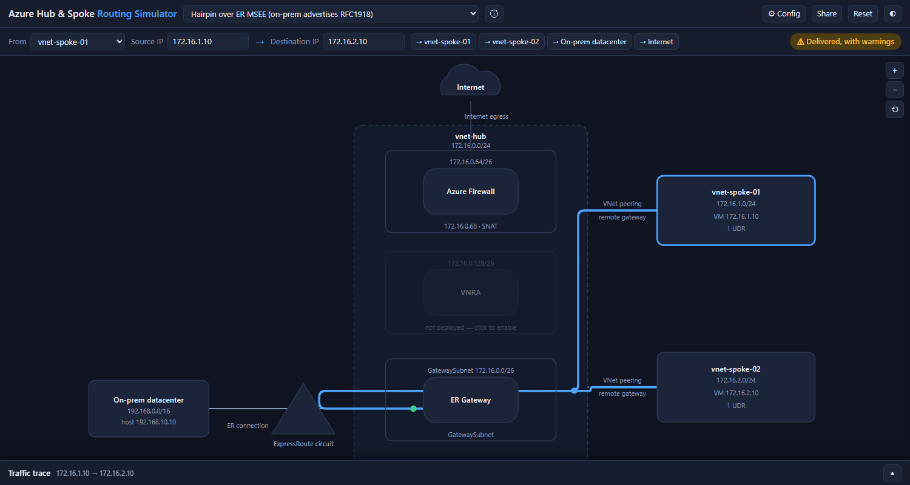
7 · ✖ Asymmetric traffic to on-prem (one leg over Azure Firewall)
What goes wrong: the spokes send on-prem traffic to the firewall (UDRs for the on-prem networks), but the GatewaySubnet has no UDR for the spoke ranges.
- Request: spoke 1 → firewall → ER gateway → MSEE → on-prem.
- Reply: on-prem → MSEE → ER gateway → directly into spoke 1 over the peering, because the gateway knows the spoke's peering route.
Result: ✖ Delivered one way only with the finding Asymmetric. The firewall only sees the SYN, never the SYN-ACK, and drops the session.
Fix: add UDRs on the GatewaySubnet for the spoke ranges (172.16.1.0/24, 172.16.2.0/24) → firewall, so the return leg is inspected too (scenario 1).
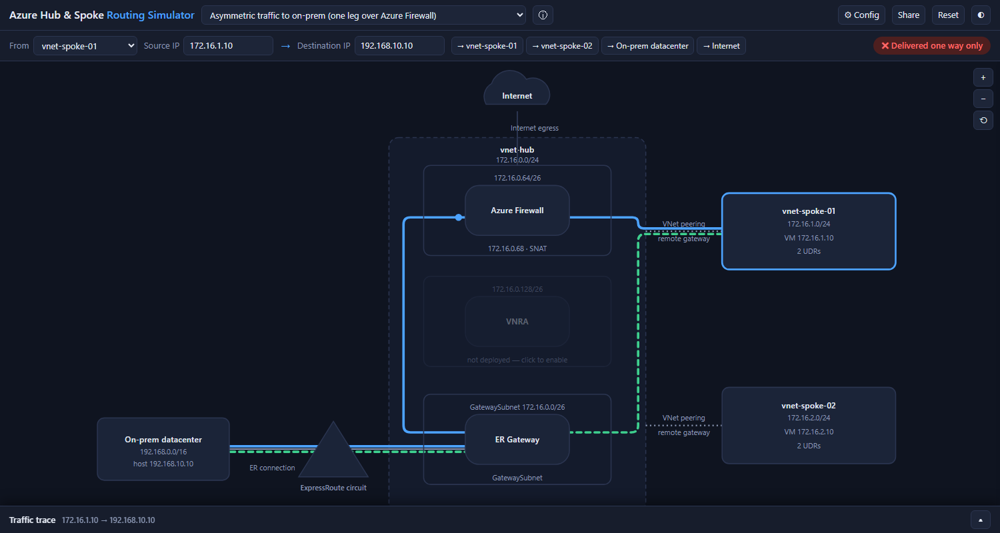
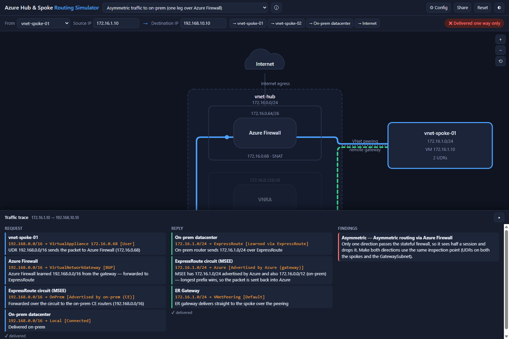
Sharing and saving
- Share copies a link with the complete scenario encoded in the URL hash (
#s=…). Open it and the recipient sees exactly your configuration, flow and, if it matches a preset, the preset name. - Your edits are saved automatically in your browser (localStorage) and restored on your next visit. Reset clears them.
- Nothing leaves your browser; there is no analytics and no server.
Limitations
- This is a routing-model simulator, not Azure itself. It does not model NSGs, Azure Firewall rule evaluation (only a single allow/deny switch), load balancers, Private Link, VPN gateways, Route Server or multiple regions.
- One hub, two spokes and one ExpressRoute circuit.
- IPv4 only.
- Preview features (Disable peering route propagation, VNRA) can change before general availability. Validate against Microsoft Learn before you build.
- Always test the real network: the simulator is a design and teaching aid, not a replacement for Effective routes and Next hop in Azure Network Watcher.
Run, test, host
- Static site, no build step: open
index.html. Files:engine.js(routing engine),ui.js(rendering),style.css,docs.html. - Engine tests:
node tests/engine.test.js. - GitHub Pages: repository Settings → Pages, deploy from branch
main, folder/ (root). - The original single-file version is kept in
legacy/.
Glossary
| Term | Meaning |
|---|---|
| UDR | User-defined route in a route table. |
| BGP | Border Gateway Protocol; how routes are exchanged between on-prem, the MSEE and the ER gateway. |
| MSEE | Microsoft Enterprise Edge, the Microsoft side routers of an ExpressRoute circuit. |
| ER gateway | ExpressRoute virtual network gateway in the GatewaySubnet. |
| VNRA | Virtual Network Routing Appliance: a forwarding-only hub appliance (preview). |
| DPR | Disable peering route propagation (preview). |
| Hairpin | Traffic that leaves Azure and returns over the same circuit. |
| Asymmetric routing | Request and reply use different paths. |
| SNAT | Source network address translation, used by the firewall for Internet egress. |
| Next hop | The device a route points to. |
| Longest prefix match | The most specific matching route wins. |